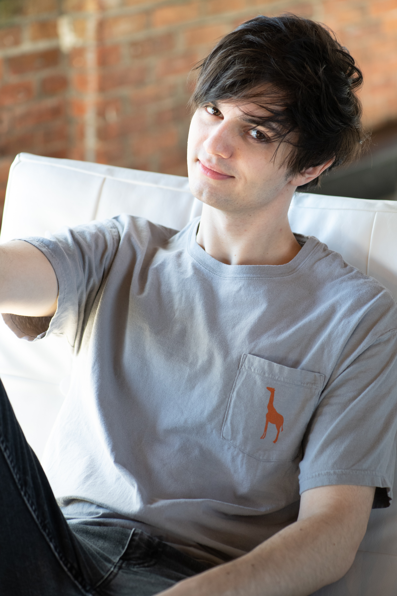
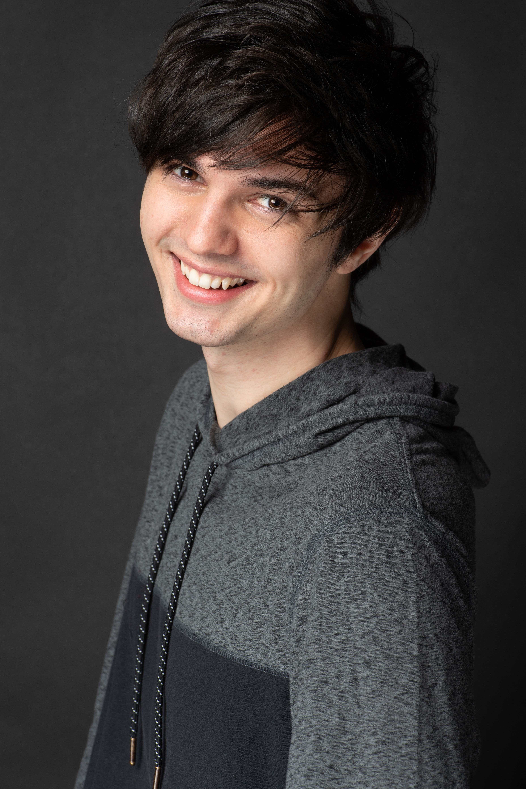

+

I’m a voice actor and music producer with a BFA in Graphic Design from the University of West Florida. Whether it’s behind the mic or behind the screen, I’m passionate about storytelling through sound and visuals.
As a voice actor, I bring characters to life through expressive, engaging performances ranging from grounded and conversational to bold and stylized. My background in design and experience with Tag Team projects have sharpened my ability to think creatively and communicate clearly, both on a team or with a client.
In the music world, I run a YouTube channel called WhenLifeGivesYouCrosby (or WLGYCrosby for short), where I produce original music inspired by games and animated series. It’s a space where I blend fandom with production, creating energetic tracks that connect with niche communities in fun and unexpected ways.
Contact
As a voice actor, I bring characters to life through expressive, engaging performances ranging from grounded and conversational to bold and stylized. My background in design and experience with Tag Team projects have sharpened my ability to think creatively and communicate clearly, both on a team or with a client.
In the music world, I run a YouTube channel called WhenLifeGivesYouCrosby (or WLGYCrosby for short), where I produce original music inspired by games and animated series. It’s a space where I blend fandom with production, creating energetic tracks that connect with niche communities in fun and unexpected ways.